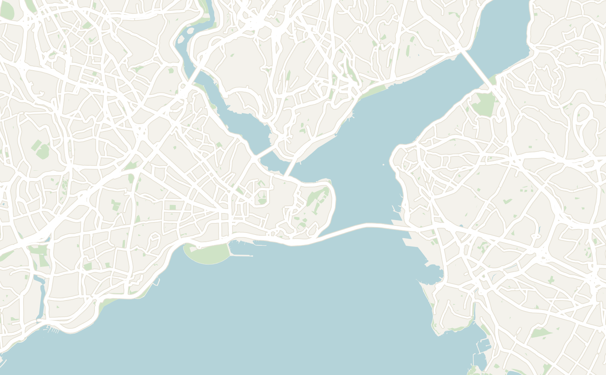
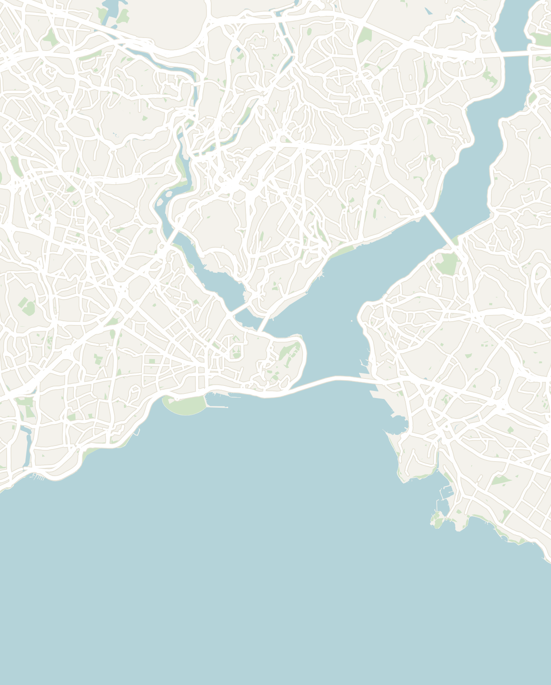
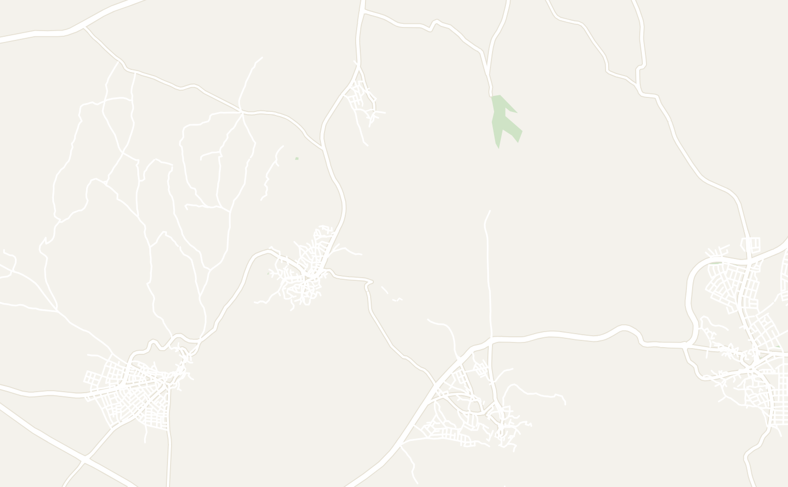
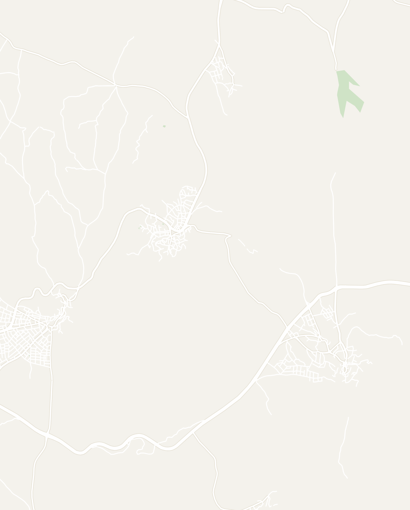
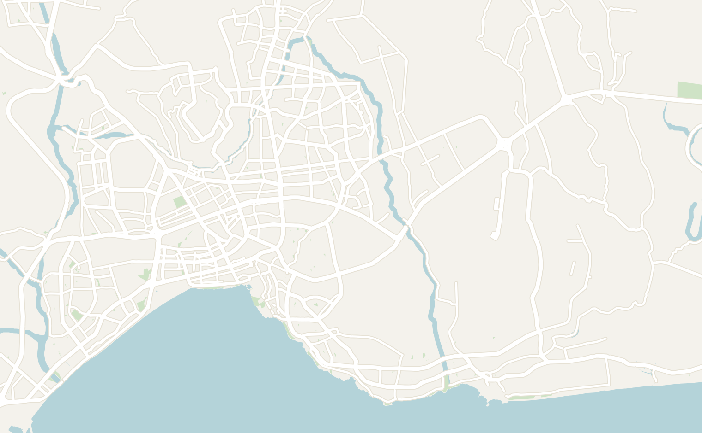
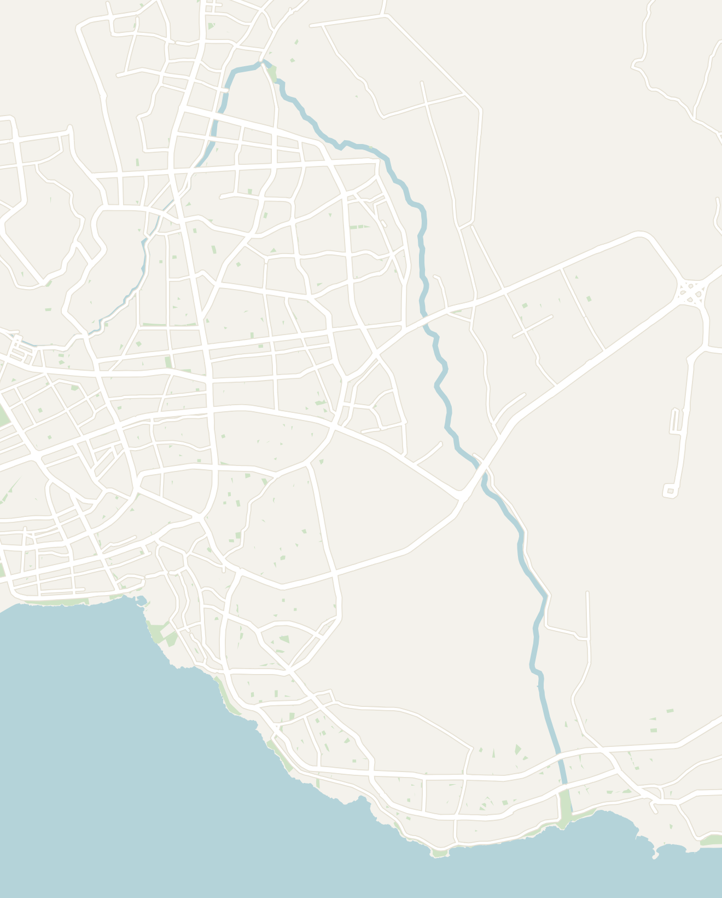
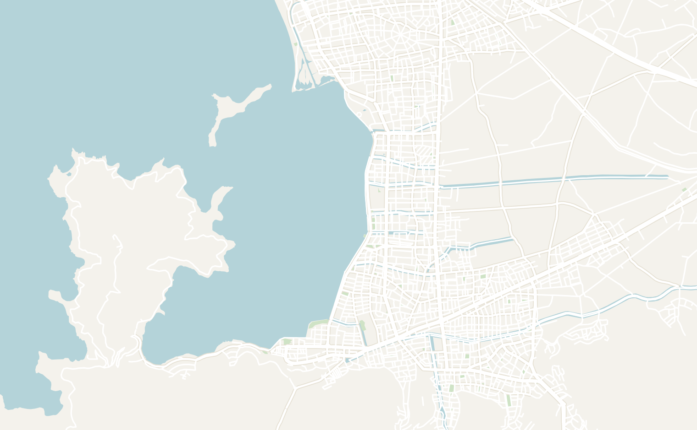
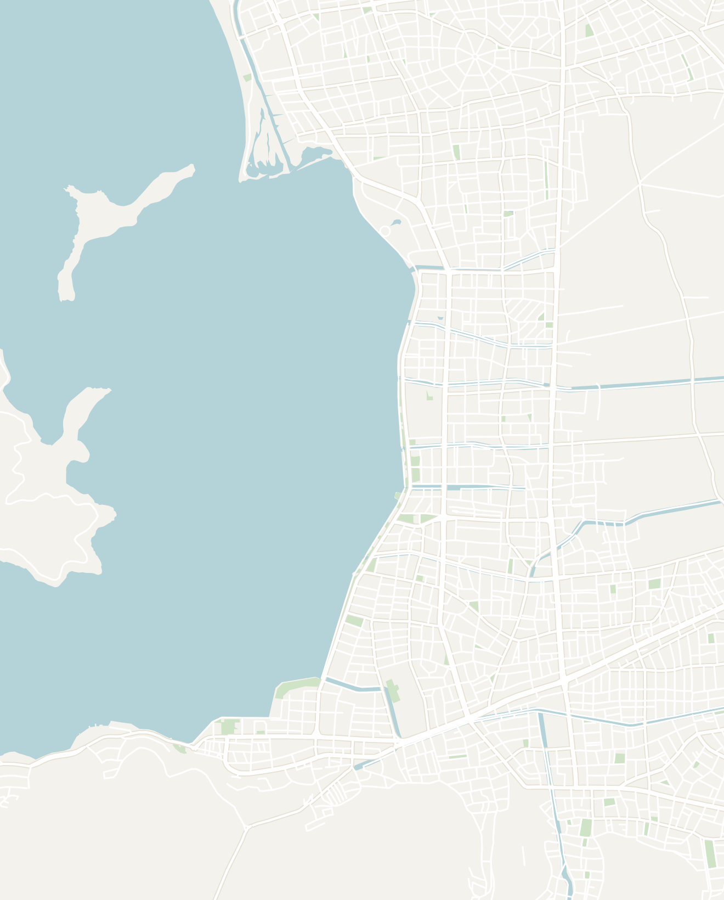

In this guide
Türkiye Field Notes
General
Suggested Route Overview
- Türkiye is a fascinating country at the intersection of Europe and Asia. With its long history as part of the Silk Road and as the capital of the Byzantine and Ottoman Empires, the country has a unique, rich cultural heritage. It is also home to ancient wonders like Cappadocia and pristine beaches on the Turquoise Coast
- Transport
- Ridesharing — download Uber or YandexGo before you land. Taxis are known to overcharge tourists, particularly from Istanbul airport
- Public transport — buses and metros are well organized, clean, and run on time. Easy to navigate
- Flights — Istanbul is one of the most visited airports in the world. Domestic carriers like Pegasus and AJet offer affordable flights connecting other parts of the country
- Food — Turkish food is one of my favorites. Dishes worth trying:
- Doner Kebap — the most famous Turkish dish. Lamb and beef shaved off a rotating spit, served on pita with fresh vegetables and yogurt sauce. Reliable, cheap, and available on almost any corner
- Çay (Black Tea) — the most popular drink in Turkey. Small black tea in a tulip-shaped glass with a sugar cube. Available everywhere and very cheap
- Turkish Coffee — traditionally brewed over hot sand. Distinct taste since the grounds are left inside
- Iskender Kebap — probably my favorite. Doner meat on bread, covered in tomato sauce
- Manti — dumplings stuffed with meat, served with yogurt sauce
- Menemen — Turkish scrambled eggs mixed with tomatoes, served with bread
- Turkish Breakfast — meze-style spread of simit (circular sesame bread), eggs, cheese, olives and tomatoes
- Cash — credit cards are widely accepted in large cities and major tourist areas, but carry cash for street vendors
- On my second visit, Turkey was no longer a cheap destination, prices were comparable to Greece
- The country has experienced significant inflation. The largest bill is 200 Turkish Lira (~$4), so you end up carrying a lot of cash. Plan accordingly at ATMs
Istanbul
3–5 days recommended- Give it at least 3 days. Istanbul is one of the great cities in the world and home to over 15 million people. There are plenty of sites and day trips to explore
Neighborhoods / Where to Stay
- Istanbul is a massive city (spanning two continents) so plan your visit and daily activities based on the neighborhood you’re staying in. The European and Asian sides each have a completely different vibe. Most tourist sites are on the European side; the Asian side is more representative of how modern Turkish people actually live
- I recommend staying on the European side (Sultanahmet or Beyoğlu neighborhoods) for 3–5 days and only adding time on the Asian side if you plan to stay longer. Here is a basic overview of the neighborhoods:
- Sultanahmet (The Old City — European Side) — best neighborhood to stay since it is walkable from most major historical sites. Prices may be higher
- Cheers Hostel — great location right in the middle of old town with a good balcony view
- Beyoğlu — the New City on the European side, still very walkable. Worth splitting time between Sultanahmet and Beyoğlu. Sub-neighborhoods include Galata, Karaköy and Taksim
- The Central House Istanbul Taksim — right by Taksim Square, very modern facilities. Good stay but not particularly social
- Kadıköy (The Asian Side) — where the majority of people live. A great choice if you have more time and want a slice of modern Turkish life. Much more affordable but further from tourist sites
- Sultanahmet (The Old City — European Side) — best neighborhood to stay since it is walkable from most major historical sites. Prices may be higher
What to Do
- Sultanahmet Area
- Hagia Sophia — the most famous building in Istanbul. Originally a Byzantine cathedral, converted to a mosque, then a museum, now a mosque again. The interior dome is very impressive. Gets very busy — go early to avoid crowds and bring something to cover your shoulders/head
- Blue Mosque (Sultan Ahmed Mosque) — right across from Hagia Sophia. Six minarets and stunning blue Iznik tile interior. Active mosque — closes during prayer times, plan accordingly
- Basilica Cistern — underground Byzantine cistern beneath the city. You walk along a walkway above the water with columns towering above you and statues scattered throughout
- Grand Bazaar — one of the oldest and largest covered markets in the world with 4,000+ vendors selling everything from spices to gold to leather. Go to browse, buy souvenirs and absorb the atmosphere. Don’t be afraid to bargain aggressively — prices are heavily inflated for tourists
- Nuruosmaniye Mosque — stunning baroque Ottoman mosque right next to the Grand Bazaar. Often overlooked, but really beautiful inside
- Balat — former Jewish neighborhood on the European side with colorful houses on steep cobblestone streets. One of the most photogenic neighborhoods in the city with great cafes and antique shops
- Fish sandwiches by the Galata Bridge — iconic Istanbul street food. Traditional Turkish boats with golden roofs along the Golden Horn grill fresh mackerel on deck and serve them in bread. Not mind-blowing, but worth trying. Watch for the bones
- Topkapi Palace — the primary residence of Ottoman sultans for 400 years. An enormous complex with multiple courtyards, treasury, harem and incredible Bosphorus views. At least half a day to fully explore. The treasury with the Spoonmaker’s Diamond and Topkapi Dagger is the standout
- Way too crowded with tourists (people pushing to get around) when I went; go in the morning before the crowds show up
- Beyoğlu / Karaköy Area
- Galata Tower — medieval stone tower in Karaköy. Great views from the top, but the real draw is the neighborhood below with good coffee shops, restaurants and street life
- Karaköy neighborhood — the trendiest area in Istanbul right now. Great coffee, street food, and a mix of old Ottoman buildings and new design studios. Walk here from the Galata Tower
- Bosphorus — the strait dividing Europe and Asia is a great place to take a ferry ride during sunset. You can take a boat ride tour or cheap public ferries which run constantly
Day Trips
- Prince Islands — a set of islands close to Istanbul, known for their wooden Ottoman houses. You can ride a bike around or visit the beaches. I didn’t get the chance to visit, but I heard it’s a good day trip. Access via public ferry from the major ports in Istanbul
Where to Eat
- Coffee Restarting and Co. — modern coffee shop in Karaköy. Best coffee I had in Istanbul


Türkiye
Istanbul
Touch to explore
Double-tap to open in Google Maps
Double-tap to open in Google Maps
Cappadocia
- Cappadocia is genuinely one of the most magical places in the world with surreal landscapes, fascinating history and the iconic hot air balloon ride. No matter how touristy it is, it is absolutely worth the trip
- How long to spend
- 2 full days minimum if you’re short on time
- 1 day for the early morning hot air balloon ride and exploring historical sites, 1 day for hiking
- The hot air balloon ride often gets cancelled in bad weather (rain and high winds); plan extra time in the area to make sure you don’t miss it
- How to get there
- Stay in the town of Göreme — it’s the main base and has the best access to everything
- Most people fly to Nevşehir Kapadokya Airport (NAV) or Kayseri Erkilet Airport (ASR), both 45–60 minutes from Göreme. Multiple flights a day from Istanbul, ~$70–$100 round trip
What to Do
- Sunrise Hot Air Balloon Ride — no trip to Cappadocia is complete without the iconic hot air balloon ride. Balloons launch at sunrise and float over the fairy chimneys and valleys. Over 300 balloons are launched every morning in Cappadocia. Genuinely one of the most spectacular experiences and worth every penny
- Expect to wake up at 4am–6am (depending on the season) to be driven to the launch spot for sunrise. The ride lasts about 1–2 hours
- Book in advance — reputable operators fill up weeks out and it is expensive (~$150–200+)
- Safety — this is one of the safest places to do it since weather is heavily monitored and it is home to some of the most experienced pilots in the world
- Alternatives — most hotels in Göreme have roofs where you can watch the sea of colorful balloons rise over the city. Many people also enjoy hiking to viewpoints to watch the balloons from a distance
- Göreme Open Air Museum — a UNESCO site with rock-cut Byzantine churches decorated with stunning frescoes dating back to the 10th century. Early Christians hid in the Cappadocia area to escape persecution and hermit-monks lived in the fairy chimneys. The Dark Church frescoes are the most impressive. Easy walk from Göreme town center
- Uçhisar or Ortahisar Castle — ancient rock fortresses dating back 3,000–4,000 years. Climb for a panoramic view of the entire region. Both castles have massive underground cities beneath them
- Uçhisar Castle is the highest point in Cappadocia with spectacular views, worth it especially around sunset
- Hiking — the best way to explore Cappadocia. The area has unique rock formations including tall fairy chimneys and valleys. No official trail markers but easy to navigate by phone and trails are quiet. I spent a full day hiking all the major valleys from Göreme (AllTrails route here). Each valley has its own character:
- Love Valley — the valley with the famous tall phallic rock formations. The landscape is genuinely alien and the views from the ridge above are incredible
- White Valley — quieter than Love Valley with beautiful white and cream colored rock formations. Great for hiking and photography
- Red Valley — named for the reddish volcanic rock. Best at sunset when the colors go vivid orange and red
- Pigeon Valley — named for the hundreds of little pigeon houses carved into the rock faces. Locals used pigeon droppings as fertilizer for centuries
- Uçhisar Castle — ancient castle with an underground city beneath. One of the best views in Cappadocia
Where to Stay
- Stay in the town of Göreme — most experiences are walkable and there’s a good variety of shops and restaurants
- Arinna Cappadocia — one of the best hotels I’ve ever stayed at. The “balloon view” room has a glass door where you can watch the hot air balloons rise over the city right from your bed. Located higher on the hill with a great view overlooking Göreme
- Terra Cave Hotel — staying in a cave hotel is a unique experience only available in Göreme. Based on the ancient tradition of living in caves in Cappadocia, it was surprisingly luxurious, complete with a roof overlooking the entire city
Where to Eat
- My Mother’s Restaurant — my favorite restaurant in Göreme. Visited multiple times and really enjoyed their Manti (Turkish Dumplings in yogurt sauce)
- Testi Kebab — Cappadocia is famous throughout Türkiye for this regional specialty. Kebab meat and vegetables slow-cooked in a sealed clay pot. The waiter lights the pot on fire and breaks it at the table. Fun experience worth doing at least once

ATTRACTIONS
1Göreme
2Göreme Open Air Museum
3Uçhisar
4Love Valley
5White Valley
6Red Valley
7Pigeon Valley
8Uçhisar Castle
RESTAURANTS & BARS
9My Mother’s Restaurant
ACCOMMODATION
10Arinna Cappadocia
11Terra Cave Hotel

Türkiye
Cappadocia
Touch to explore
Double-tap to open in Google Maps
Double-tap to open in Google Maps
Antalya
2 days recommended- Antalya lies on the Southern Coast of Turkey and is home to over 1.5 million. As the largest city and aiport in the region, Antalya serves as the gateway to the gorgeous Turkish Riviera (also known as the Turquoise Coast)
- The city is a vibrant sprawling metropolis and is worth spending a couple days before branching off into the smaller towns along the Turquoise Coast. However, I would make sure to prioritize your time in the smaller coastal towns over Antalya
What to Do
- Kaleiçi Old Town — a vibrant old quarter characterized by classic Ottoman architecture, this is the highlight of Antalya. You can start at Hadrian’s Gate at the entrance and walk through the neighborhood all the way until the ocean. It is a great place to base yourself while staying in Antalya, but it is a relatively small area that can be explored in a half a day
- Düden Falls — these are the famous waterfalls that are broken into two separate parts over 40 minutes apart. Both parts are very different and are worth visiting in their own right
- Upper Düden Falls — the upper falls are the source of the falls that eventually flow through the city of Antalya down into the ocean. The area is very green with a few waterfalls, cave tunnels (with bats) and bright turquoise river. The entire place is part of a tourist park and you need to pay admission to get in
- Lower Düden Falls — in contrast, the lower portion of the falls are located right along the ocean. A massive waterfall that drops directly into the ocean. It is really impressive at scale when you see boats at the bottom dwarfed by the falls. You can visit for free and easy to reach by bus. It is also possible to take a boat tour on a massive boat
- Sagalassos Ancient City — located a 3 hour drive from Antalya. This is a massive ancient Roman city with a theatre, baths, main square and a recently reconstructed fountain. The architectural site was very impressive and it took us a full half day to explore given the size of the area. There were mainly Turkish tourists when I was there and it wasn't too busy
- There are many other architectural sites in the area that are a bit closer to Antalya including: Aspendos Theatre (45 min) or Termessos Ruins (50 min)
- Köprülü Canyon National Park - this is a canyon with turquoise water flowing through, located 1.5 hours from Antalya
- As a day trip from Antalya, I did a white water rafting tour here. It was only $30 all in including a jeep safari, zipline, canyon overlook and rafting. It wasn't the most fun adventure tour since the rapids are a bit weak (level 2). However, the scenery was beautiful and it would be a great activity for the family.
Where to Eat
- Paşa Bey — this was recommended by locals as the best restaurant in Antalya. The Iskander kebab here (bread cooked in tomato sauce with cream) was one of my favorite meals in Turkey
- Tarihi Ankara Simit Fırını — this is a local bakery owned by a Kurdish family. It was great for breakfast and I found myself returning there 3 days in a row. It is located slightly outside of the old town and a very affordable option. Try the Çay, Menemen (Turkish scrambled eggs with tomato) or the meat and cheese Böregi
- Üstat lokantası - a cafeteria style Turkish restaurant, recommended by multiple locals. It was very afforable with large portion sizes and variety of choices
- Doys Döner Antalya - a great doner spot if you're looking for a quick meal. The spicy option is INSANELY spicy
Where to Stay
- Kiana Kaleiçi - this is a great hotel located right in the heart of downtown. It was affordable, centrally located near restaurant, the facilities were great and the staff was very friendly
- Gold Coast Hostel - I would NOT recommend staying here. The hostel is very run down and there are a few weird staff members here. The door on my room broke twice and I was locked inside

ATTRACTIONS
1Kaleiçi Old Town
7Upper Düden Falls
8Lower Düden Falls
RESTAURANTS & BARS
2Paşa Bey
3Tarihi Ankara Simit Fırını
4Üstat lokantası
5Doys Döner Antalya
ACCOMMODATION
6Kiana Kaleiçi

Türkiye
Antalya
Touch to explore
Double-tap to open in Google Maps
Double-tap to open in Google Maps
Far Out Sailing Journey - Olympos to Fethiye
- One of the highlights of my time in Turkey was embarking on a 4 day, 3 night sail along the Turkish Riviera (or Turquoise Coast). I joined the tour offered by Far Out Turkey (also called Sail Turkey - link to tour here) and was on the boat called the Mr. Ceyhun. Along the way they made a bunch of stops so you can explore what the coast has to offer: beautiful coastline, ancient castles, small local towns and more
- They offer a few different versions of the sail:
- A 4 day tour from (Fethiye to Olympos or in reverse)
- A 7 day option
- They also have two boats running the same itinerary at the same time so you have the option to choose your age group: 18 - 39 or Mix Age
- There are weekly departures throughout the summer for each tour option. I went in May (a bit early in the season). It was a bit windy and they combined our tour with a 7-day one. I'd recommend going later in the summer for better the weather
- The group size for my sail was 13 people and the crew. The tour is very popular for Aussies (everyone on my boat was an Aussie except for me)
- Itinerary - the example itinerary provided on the website is subject to change based on the weather. This was our schedule which hit all the key highlights along the coast:
- Day 1 - Pickup in Demre, sail to Kekova Sunken City (Lycian ruins just below the water's surface, can't swim — UNESCO protected), Simena Castle (Ottoman era castle overlooking the bay), card games and sunset on deck
- Day 2 - Morning sail to Kaş (one of the most beautiful towns in the Turkish Riviera), explore town (ancient amphitheater, marina, old town alleys), afternoon hike to Limanağzı pickup point, night out at Queen Terrace Bar in Kaş
- Day 3 - Long sail through rough weather to Ölüdeniz area, optional paragliding from the mountain above the Blue Lagoon (highly recommend — book separately), dock near Santa Claus Island (ruins of where St. Nicholas was buried) and sunset hike to the top
- Day 4 - Morning at Blue Lagoon, short sail into Fethiye port, settle tabs and say goodbye to crew
- Cost - this sail is a lot more affordable than similar sails in Croatia or Italy. I paid just under $500 USD (check the website for the latest pricing). However, there were times where I felt like the company cut corners like serving meat once a day or only having one crew member that spoke English
- Food is included in the cost, but they have a tab system for other drinks and charge a premium for alcohol onboard
The Verdict
- This is by far the best way to explore the Turkish Riviera. Unless you have issues with seasickness, this tour is an affordable option that stops at all the popular spots along the coast. It also left lots of free time to just relax and socializing with the other travellers onboard. Being on the boat for 4 days was the right amount of time for me and I had an absolute blast
Fethiye & Ölüdeniz
2-4 days recommended- Located just over 20 minutes away from each other, Fethiye & Ölüdeniz are two of the most popular cities along the Turkish Riviera, both with a very different character:
- Fethiye is the mid-size port city where most of the boat tours end up. Over 170,000 people live here, mostly working around the tourism industry and it is also a popular place for retirement homes in Turkey. It was very safe, clean and almost felt like an American Suburb
- Ölüdeniz is a much smaller town that is much more touristy consisting of almost all hotels and holiday homes along with a vibrant strip by the water of restaurants and souvenir shops. It is a nice little town, but felt very touristy catering toward European Holiday package makers
- Transport
- Flights - Both cities are serviced by Dalaman Airport (DLM) which has frequent connections to major Turkish Cities. Antalya Airport and Bodrum Airport are also roughly 3 hours away.
- Buses - There is a free tourist shuttle (called the "Dolmus") that runs through the area, connecting Fethiye and Ölüdeniz every 10 minutes. It is super convenient and there is a stop along the main road on every block. This shuttle also connects to other smaller towns including the Butterfly Valley, Hisaronu, Ovacik, Kayakoy and others
What to do
Ölüdeniz
- The Blue Lagoon — one of the most photographed beaches in the world (and for good reason). This beach is truly spectacular and one of the best that I have ever seen. There is a unique sand bar that is surrounded on one side by the florescent blue water of the Mediterranean Sea and on the other side by a clear lagoon that changes into different shades of blue throughout the day.
- You can visit by renting a beach chair at one of the many beach clubs or snorkel in the lagoon and see many of schools of the fish there
- Paragliding in Ölüdeniz — is by far one of the best things I did in Turkey. You launch from a platform at the top of a mountain and glide for about 30 minutes over the insanely bright blue lagoon below. The view was absolutely out of this world and paragliding was surprisingly more peaceful than I expected.
- Expect to pay about $100 - $150, but it is worth every penny and comes with a lot of photos
- Hike up to the Viewpoint - often referred to as the Hotel Montana Viewpoint since the trail starts at the Hotel (starting point here). You can hike about 40 minutes away from the city to have a magnificent view overlooking the Blue Lagoon
Fethiye
- Fethiye Old Town — there is a small old-town filled with restaurants, bars and shops. It is a fun area to wander during the day and gets lively with nightlife on the weekend
- Ancient City of Telmessos — there is a hand-carved temple and rock tombs embedded in the hillside above Fethiye. The area was home to the ancient Lycian civilization (similar to Ancient Greece) so you'll see remnants of the civilization all along the coast. There is not much signage so it is a quick 15 minute visit, but still worthwhile
- Walk along the promenade and watch the sunset — The city has a modern promenade along the water that stretches over 3+ miles. It is a great place to grab dinner or walk and watch the sunset. There are also bikes and electric scooters to rent
The Lycian Way
- This is an ancient trail associated with the Lycian Civilization, an ancient Mediterranean civilization dating back over 2,000 years. The full trail stretches over 520 to 540 km (320 to 335 miles) and takes over 25 to 35 days to complete. The official beginning is Hisarönü, a resort village near Ölüdeniz.
- Luckily, it is easy to just do pieces of the longer hike. I decided to hike over 3 days from:
- Fethiye to Kayaköy (8.5 miles)
- Kayaköy to Oludeniz (~6 miles)
- Between Fethiye and Ölüdeniz make sure you stop at Karakoy, an abandoned an Greek Christian village emptied during the 1923 population exchange. The city is now a huge ghost town that spanned for miles and felt haunting with the fog and not too many other tourists around
- Oludeniz to Butterfly Valley (7.9 miles)
- The trail was very easily navigable on AllTrails with signs and trail markers spaced throughout. There weren't many other people on the trail. It consists of a mix of paved stone paths, walking on the side of the road and hiking paths through the forest. The terrain was very managable, just follow basic hiking common sense like bringing hiking boots, lots of water and snacks
- There is a variety of accommodation that you can choose from. I chose to stay in hotels in the major towns, but there are a lot campsites available along the way
Where to Eat
Ölüdeniz
- Gözlemeci Sema & Ev yemekleri — small shop run by an old Turkish grandma who specializes in beans. I ordered a mixed plate with a creamy white soup, a bean salad, chickpeas and fried eggplant which was delicious
Fethiye
- Yeşil Asma Yaprağı Ev Yemekleri & Meze — homestyle cafeteria food, had lamb/pea/potato soup, tomato/potato/kefta dish and rice, recommended by locals
- Doc Coffee Company — trendy coffee shop with a great iced coffee. I ended up going twice
- Lokum Kokoreç — a no-frills shop that specializes in specialty Turkish street food. Try the Midye - Mussels stuff with rice or the Kokoreç (lamb intestine sandwich) if you’re feeling brave
Where to Stay
- If I were to do it again, I would base myself in Ölüdeniz and do a quick day trip to Fethiye since it is only 20 minutes away
- Fethiye is skippable in my opinion. It is more of a modern city and there are less touristy things to do there. However, it is the location where most of the sails end so worth a day if you end up there
Fethiye
- Fethiye is a large city so make sure you stay by Old Town or the Port. Many of the hotels are not in this area so research carefully.
- Most of the city is residential so the restaurant and bars close very early. I made the mistake of staying far away from old town and taxis were extremely expensive
- El Camino Pub&Hostel - I didn't stay here, but my friends really liked this place. The location is right by the port and only a 5 minute walk away from old town. The restaurant / bar was also a great place to watch the sunset. This hostel books out quickly so reserve in advance!

ATTRACTIONS
1Fethiye Old Town
2Ancient City of Telmessos
3Walk along the promenade and watch the sunset
RESTAURANTS & BARS
4Yeşil Asma Yaprağı Ev Yemekleri & Meze
5Doc Coffee Company
6Lokum Kokoreç
ACCOMMODATION
7El Camino Pub & Hostel
MULTI-DAY TRIP
↗The Lycian Way

Türkiye
Fethiye
Touch to explore
Double-tap to open in Google Maps
Double-tap to open in Google Maps
Other Places to Consider
I will definitely be back for another trip to Turkey. There are so many layers to the country and I felt like I was just scratching the surface. Here were some places recommended by other travelers:
Western Turkey
- Izmir - one of the largest cities in Turkey located along the western coast
- Pamukkale - one of the most popular attractions in Turkey with the hot springs and white pools
- Ephesus - a famous ancient Greek city near Izmir
- Safranbolu - a silk road city with traditional Ottoman style architecture
Southeastern Turkey
- Mt. Nemrut - a field of mysterious ancient statues and heads
- Mardin & Midyat - beautiful cities located near the Syrian border
- Diyarbakır - the cultural capital of Turkish Kurdistan
Northeastern Turkey
- Trabzon - area with forest and lakes (looks more like Germany) on the border with Georgia
Eastern Turkey
- Doğubeyazıt - a beautiful mosque with the snow capped mountains in the backdrop
- Mt. Ararat - a mountain in Eastern Turkey that is supposedly the location of Noah's Ark and the national symbol of Armenia